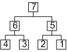

12.5. Traversing the tree
You can scan all the nodes of the tree and have a custom function called back for each node.
Each traversal function returns false if the traversal has been interrupted (a callback returned false).
* Pre-order : the callback is called for the current node, then for the left son, then for the right son.
* In-order : the callback is called for the left son, then for current node, then for the right son.
* Post-order : the callback is called for the left son, then for the right son, then for the current node.
* Level-order : the callback is called for the nodes level by level, from left to right.
* Inverted level-order : the callback is called in the exact inverse order as Level-order.
| Pre order | In order | Post order | Level order | Inverted level order |
|---|---|---|---|---|
 |  |  |  |  |
class ITCODBspCallback {
public :
virtual bool visitNode(TCODBsp *node, void *userData) = 0;
};
bool TCODBsp::traversePreOrder(ITCODBspCallback *callback, void *userData)
bool TCODBsp::traverseInOrder(ITCODBspCallback *callback, void *userData)
bool TCODBsp::traversePostOrder(ITCODBspCallback *callback, void *userData)
bool TCODBsp::traverseLevelOrder(ITCODBspCallback *callback, void *userData)
bool TCODBsp::traverseInvertedLevelOrder(ITCODBspCallback *callback, void *userData)
typedef bool (*TCOD_bsp_callback_t)(TCOD_bsp_t *node, void *userData)
bool TCOD_bsp_traverse_pre_order(TCOD_bsp_t *node, TCOD_bsp_callback_t callback, void *userData)
bool TCOD_bsp_traverse_in_order(TCOD_bsp_t *node, TCOD_bsp_callback_t callback, void *userData)
bool TCOD_bsp_traverse_post_order(TCOD_bsp_t *node, TCOD_bsp_callback_t callback, void *userData)
bool TCOD_bsp_traverse_level_order(TCOD_bsp_t *node, TCOD_bsp_callback_t callback, void *userData)
bool TCOD_bsp_traverse_inverted_level_order(TCOD_bsp_t *node, TCOD_bsp_callback_t callback, void *userData)
def bsp_callback(node, userData) : # ...
bsp_traverse_pre_order(node, callback, userData=0)
bsp_traverse_in_order(node, callback, userData=0)
bsp_traverse_post_order(node, callback, userData=0)
bsp_traverse_level_order(node, callback, userData=0)
bsp_traverse_inverted_level_order(node, callback, userData=0)
| Parameter | Description |
|---|---|
| node | In the C version, the node reference (generally, the root node). |
| callback | The function to call for each node. It receives the current node and the custom data as parameters If it returns false, the traversal is interrupted. |
| userData | Custom data to pass to the callback. |
Example:
class MyCallback : public ITCODBspCallback {
public :
bool visitNode(TCODBsp *node, void *userData) {
printf("node pos %dx%d size %dx%d level %d\n",node->x,node->y,node->w,node->h,node->level);
return true;
}
};
myBSP->traversePostOrder(new MyListener(),NULL);
bool my_callback(TCOD_bsp_t *node, void *userData) {
printf("node pos %dx%d size %dx%d level %d\n",node->x,node->y,node->w,node->h,node->level);
return true;
}
TCOD_bsp_traverse_post_order(my_bsp,my_callback,NULL);
def my_callback(node, userData) :
print "node pos %dx%d size %dx%d level %d"%(node.x,node.y,node.w,node.h,node.level))
return True
libtcod.bsp_traverse_post_order(my_bsp,my_callback)